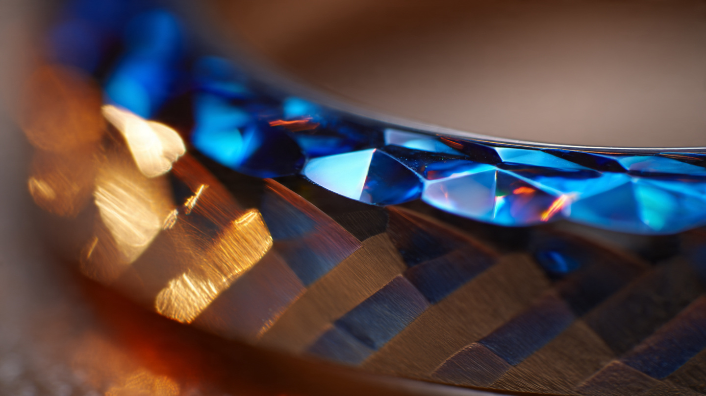

Harder When Struck: COBARION, a Gem-Cutter’s Chisel, and the G-SHOCK Bezel That Fights Back

Most watchmaking materials cooperate with the people who shape them. Stainless steel yields predictably under a lathe. Titanium, once you account for its gummy tendency to weld itself to cutting tools, can be machined to tight tolerances with carbide tooling and proper coolant. Even ceramic, brittle and unforgiving as it is, behaves consistently: it either holds its shape or it shatters. You know what you are working with.
COBARION does not cooperate. It is a cobalt-chromium alloy developed in Japan, approximately four times harder than pure titanium at baseline, and it has a property that makes it unlike nearly any other material a watchmaker has ever tried to shape: it work-hardens under mechanical stress. Apply force to COBARION and the material responds by becoming harder at the point of contact. Cut into it and the next cut is more difficult. Grind a surface and the surrounding area resists grinding more aggressively than before. Press it during forging and the resulting sheet is harder than the ingot it came from. Every interaction with a tool makes the tool's job incrementally worse.
Casio asked master gem-cutter Kazuhito Komatsu to hand-facet a bezel from this material. Not machine it. Not CNC it. Hand-cut it, with a chisel, one facet at a time, in a spiral pattern inspired by brinicles, the downward-growing columns of ice that form beneath the surface of polar seas. Eight hundred bezels, each one finished individually, each one fighting back against the artisan who made it.
What came out the other side is the MRG-BF1000EB, a 30th-anniversary MR-G FROGMAN limited to 800 pieces worldwide, and one of the most technically demanding surface finishes ever applied to a production diver's watch.
A Medical Alloy Finds a Wrist
COBARION was not developed for watchmaking. It was developed by Eiwa Corporation in collaboration with Professor Akihiko Chiba at Tohoku University's Institute for Materials Research. Chiba's laboratory had spent years studying cobalt-chromium alloys for load-bearing biomedical implants, particularly artificial hip and knee joints, where the operating requirements read like a stress engineer's nightmare: high compressive strength, resistance to corrosive bodily fluids, zero nickel content to avoid triggering metal allergies, and the ability to survive millions of cyclic load repetitions without fatigue cracking.
Cobalt-chromium alloys had already proven themselves in orthopedics by the time Chiba's team began refining COBARION. What Chiba discovered during his research was that incorporating nitrogen during the melting stage dramatically increased the alloy's hardness, a result that paralleled the deep-layer nitrogen hardening Casio already applied to pure titanium in its MR-G cases. Nitrogen atoms dissolved into the cobalt lattice, pinning dislocations and resisting the crystal structure's tendency to deform under load. Combined with the alloy's inherent work-hardening behavior, this produced a material with hardness values that placed it in a category few watch-grade metals occupy.
Hardness alone does not make a material interesting for a watch bezel. Tungsten carbide is harder than COBARION. So is sapphire crystal. But both are brittle. Drop a tungsten ring and it fractures. Scratch sapphire with a diamond and the surface chips rather than deforming. COBARION, by contrast, combines its extreme hardness with meaningful ductility and toughness. It deforms before it fractures. It absorbs energy before it breaks. For a diver's watch bezel that will be subjected to impacts against rocks, boat hardware, and dive tanks, this combination matters more than peak hardness on a Vickers scale.
Casio first used COBARION in the MRG-B5000 square G-SHOCK series, and the adoption required developing entirely new machining processes. No watch manufacturer had ever worked with the alloy. Standard tooling wore out faster than anticipated. During the rolling stage of sheet production, surface cracks and breakage appeared when the material was thinned, and the COBARION was hard enough to damage the rolling equipment itself. Eiwa Corporation and Casio's engineering team iterated through multiple melting temperature profiles, forging sequences, and rolling protocols before arriving at a production-ready process.
Cutting What Fights Back
Kazuhito Komatsu's official title at Casio is not easy to translate. He is a master of facet cutting and polishing, a craftsman whose primary expertise is in precious stones and pearls. His previous work on MR-G bezels includes the 2021 Hana-Basara (MRG-B2000BS), a 400-piece limited edition where Komatsu hand-polished asymmetric facets on a COBARION bezel finished in deep green DLC. For each of those 400 watches, Komatsu individually ground a mirror finish onto every facet surface. No two were identical. No machine could replicate the compound angles and pressure variation that his process requires.
For the MRG-BF1000EB, the assignment was more complex. Casio's design team specified a spiral facet pattern inspired by the brinicle, a rare underwater ice formation that occurs when super-cooled brine leaks from forming sea ice and descends through warmer seawater below. As it sinks, the brine freezes the surrounding water, creating a hollow tube of ice that spirals downward toward the ocean floor. Brinicle formations are fragile, unpredictable, and almost never observed because they require specific conditions of sea temperature, salinity gradient, and water current to form.
Translating that spiral geometry into hand-cut facets on COBARION meant that Komatsu had to manage continuously changing angles across the bezel surface while working against a material that was actively hardening beneath his tools. In conventional gem-cutting, the stone's hardness is uniform. A diamond's Mohs 10 is Mohs 10 everywhere. But COBARION's work-hardening means that the first pass of Komatsu's cutting tool creates a zone of locally increased hardness around the cut. By the time he returns to blend adjacent facets, the boundary between them is harder than either facet was when he started. Managing this gradient, maintaining consistent facet angles, and preserving optical clarity on a curved bezel surface requires a tactile understanding of the material that no technical specification can fully communicate.
After cutting, the faceted COBARION bezel receives a blue arc ion plating (AIP) finish. AIP is a physical vapor deposition process in which an electric arc vaporizes a target material, creating a plasma of ionized particles that deposit onto the substrate surface. Compared to standard PVD coatings, AIP produces denser, more adherent films with better scratch resistance because the high-energy ions embed themselves more deeply into the substrate. On the MRG-BF1000EB, the blue AIP coating follows the contours of every hand-cut facet, preserving Komatsu's spiral geometry while adding the color that references the brinicle's icy origin.
Seventy Components, One Watch
Below the COBARION bezel sits the MR-G FROGMAN platform, a full-metal ISO 200-meter diver's watch built from over 70 individual exterior components. Understanding why that number is so high requires understanding how G-SHOCK achieves shock resistance in a metal case, which is fundamentally different from how traditional dive watches handle the same problem.
A conventional diver's watch like the Omega Seamaster or Rolex Submariner protects its movement with a relatively simple architecture: a thick steel case, a screw-down crown, a screw-down case back, gaskets at every seal point, and a bezel that rotates on a click spring. Shock protection comes primarily from mass and rigidity. Make the case heavy enough, make the walls thick enough, and the movement inside survives impacts because the case absorbs them through sheer inertia.
G-SHOCK cannot use that approach. Its founding design principle, established by engineer Kikuo Ibe in 1983, is that shock resistance comes from isolation, not mass. In resin-cased G-SHOCK models, the module (Casio's term for the movement and electronics assembly) floats inside the case on rubber cushions, decoupled from the exterior shell so that impacts transfer minimal force to the timekeeping components. When G-SHOCK moved to full-metal construction with the MR-G line in 1996, this decoupling had to be preserved using metal components instead of resin, which meant introducing buffer elements between every metal-to-metal contact point.
In the MR-G FROGMAN, this takes the form of Casio's Clad Guard construction. Fluoro rubber buffers sit between the bezel and the case, between the case and the module, and around the crown and pushers. Each buffer absorbs and distributes impact energy before it can reach the timekeeping electronics. Every button has integrated protective parts that cushion the module from direct strikes. Each component in this system must be individually deep-layer hardened, coated with diamond-like carbon (DLC), and assembled in a specific sequence to maintain both shock isolation and ISO 200-meter water resistance.
Water resistance at this depth imposes its own constraints. A screw-lock crown, standard on most dive watches, seals with an O-ring compressed by threading the crown into a tube machined into the case. On the MR-G FROGMAN, the crown also contains puffer components made of fluoro rubber, which provide both a watertight seal and shock absorption for the stem. Fluoro rubber was selected for its extreme resistance to water degradation, UV exposure, and the chemical effects of seawater, hot springs, and pool chlorination. Standard silicone O-rings degrade measurably faster in these environments.
On the case back, sapphire crystal is press-fit into a pure-titanium screw-lock plate. Sapphire was chosen not for display (this is not an exhibition case back) but for radio wave transparency. MR-G watches use Casio's Multi-Band 6 technology, which synchronizes time via radio signals broadcast from atomic clocks in six locations worldwide. A solid titanium case back would attenuate these signals. Sapphire crystal, being non-metallic, passes radio waves with minimal interference while maintaining the structural integrity required for a 200-meter pressure rating.
57 Facets in a Screw
One of the most unusual details of the MRG-BF1000EB sits not on the bezel or dial but on two front-facing screws that accentuate the FROGMAN's characteristic asymmetric case shape. Each screw is set with a lab-grown blue sapphire, cut in a 57-facet round brilliant pattern.
Fifty-seven facets in a screw-mounted gemstone is an extraordinary number. A standard round brilliant diamond uses 58 facets (33 on the crown, 25 on the pavilion, including the culet). Casio's sapphires use 57, which is the same count minus the culet, the tiny flat facet at the very bottom of the stone. Eliminating the culet makes sense for a flush-set application where the pavilion sits against a metal backing rather than allowing light to pass through from below. But maintaining 57 facets on a gemstone small enough to fit inside a watch case screw means each facet is microscopically small, and the cutting precision required to maintain correct angles at this scale is at the extreme end of lapidary capability.
Lab-grown sapphires, created through the Verneuil flame-fusion process or more modern Czochralski pulling methods, have the same crystal structure, hardness (Mohs 9), and optical properties as natural sapphires. Choosing lab-grown over natural for this application is an engineering decision, not a cost one: lab-grown boules provide consistent color saturation and crystal orientation, which matters when you are cutting 1,600 near-identical gemstones (two per watch, 800 watches) to identical specifications. Natural sapphires vary in color zoning, inclusion distribution, and crystal axis orientation. At this production scale, consistency outweighs provenance.
Three Decades of Not Settling
MR-G launched in 1996 as G-SHOCK's first premium line. Its founding premise was simple: take the shock-resistant engineering that had made G-SHOCK successful in resin and rebuild it in metal, without losing the isolation architecture that made it work. For the first decade, this meant titanium cases and bezels, already a significant technical challenge because titanium's tendency to gall and seize during assembly required developing specialized lubrication and surface treatment protocols.
By the mid-2010s, Casio's MR-G team had introduced DAT55G, a custom titanium alloy three times harder than pure titanium, as well as deep-layer hardening and DLC surface treatments that pushed the exterior durability well beyond what standard Grade 2 or Grade 5 titanium could offer. When they moved to COBARION for bezels, they were not replacing an inadequate material. DAT55G was excellent. COBARION was better for the single component most exposed to daily contact: the bezel's top surface, where keys, door frames, and tabletop edges do their accumulated damage.
Pairing that material with an artisan who cuts it by hand is the part that does not compute on a spreadsheet. A CNC machine could produce a faceted COBARION bezel to tighter dimensional tolerances than Komatsu achieves. It would also produce 800 identical bezels, which is exactly what Casio chose not to do. Komatsu's process introduces controlled variation: subtle differences in facet angle, depth, and reflective behavior that make each piece singular. In mass manufacturing, variation is a defect. In Komatsu's practice, it is the signature that separates a hand-finished surface from a machined one.
Casio packages the MRG-BF1000EB with two interchangeable bands. A Dura-Soft fluoro rubber strap resists discoloration, dirt adhesion, and material aging far better than standard silicone. A titanium bracelet provides the metallic alternative for non-dive use. Both attach via a side-pin system with dedicated mounting tools, and the entire set arrives in a collaboration case designed with Proteca, a Japanese luggage maker, reinforcing the object-as-investment presentation that has characterized recent MR-G limited editions.
What a Material Teaches
COBARION's work-hardening property creates a paradox for anyone trying to finish it by hand. Every cut changes the material's resistance to the next cut. Every polishing stroke alters the surface hardness in the stroke's path. Working COBARION is not a static process where the artisan learns the material and then repeats a consistent technique across 800 units. It is a dynamic negotiation, cut by cut, where Komatsu must adjust pressure, angle, and speed in real time based on tactile feedback from a surface that is actively evolving under his tools.
Materials like this do not merely resist shaping. They reveal the quality of the person shaping them. Soft metals forgive inconsistency. Hard, static materials like ceramic punish mistakes with fractures but at least behave predictably. Work-hardening alloys do something more interesting: they record every decision the craftsman makes, embedding the history of the cutting process into the finished surface in ways that are not visible to the eye but are present in the microstructure of the metal.
At 800 pieces, limited to the most dedicated collectors of G-SHOCK's MR-G line, the MRG-BF1000EB will not reshape the watch industry or demonstrate a scalable model for luxury finishing. What it demonstrates instead is narrower and more precise. It shows what happens when an industrial watchmaker, known for quartz movements and resin cases and billion-unit production volumes, decides to place a medical-grade cobalt alloy under a gem-cutter's chisel and accept whatever the material teaches the artisan along the way.
Harder when struck. That is the physics. It is also, in 800 individually finished pieces, the point.
Sources
- Casio Press Release, “Casio to Release MR-G Inspired by the Polar Brinicle Phenomenon,” May 27, 2026, announcing MRG-BF1000EB specifications and brinicle design concept.
- G-SHOCK Official, “The Materials: MR-G,” technical overview of COBARION alloy properties, including hardness comparison with titanium, platinum-like gleam characteristics, and Eiwa Corporation attribution.
- G-SHOCK Pillars of Protection, Vol. 4, detailed manufacturing narrative of COBARION production process, including work-hardening during rolling, nitrogen injection during melting, and collaboration with Professor Akihiko Chiba at Tohoku University.
- Revolution Watch, “Origins of the G-SHOCK MRG-B2000BS-3A Hana-Basara,” 2021, interview with Shingo Ishizaka (Casio R&D) and Kazuhito Komatsu on COBARION bezel facet cutting and finishing process.
- Casio Official MRG-BF1000B product page, full specifications including Clad Guard construction, ISO 200-meter rating, Multi-Band 6, Bluetooth connectivity, and Dura-Soft band materials.
- Casio Press Release, “Casio to Release MR-G with Iconic Form Finished in Traditional Japanese Tsuiki Artistry,” July 2025, context on DAT55G alloy, MR-G artisan collaboration program, and Kazuya Watanabe's tsuiki process for comparison.
- Chiba, A. et al., publications on cobalt-chromium alloy development at Tohoku University Institute for Materials Research, referenced in G-SHOCK Pillars of Protection documentation.